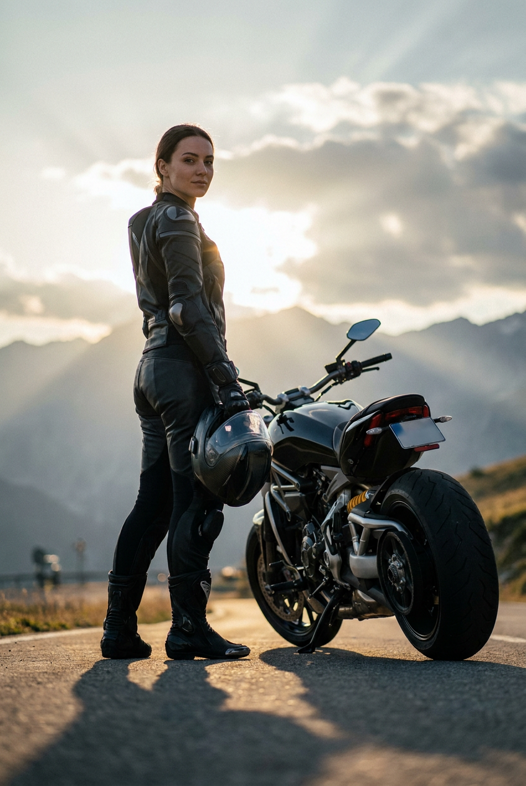
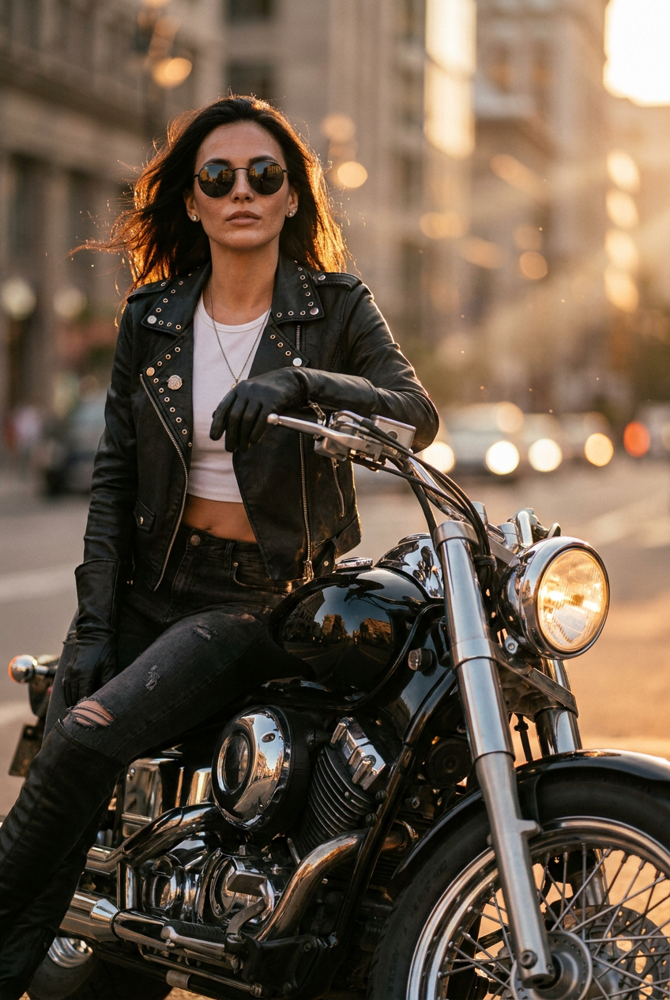
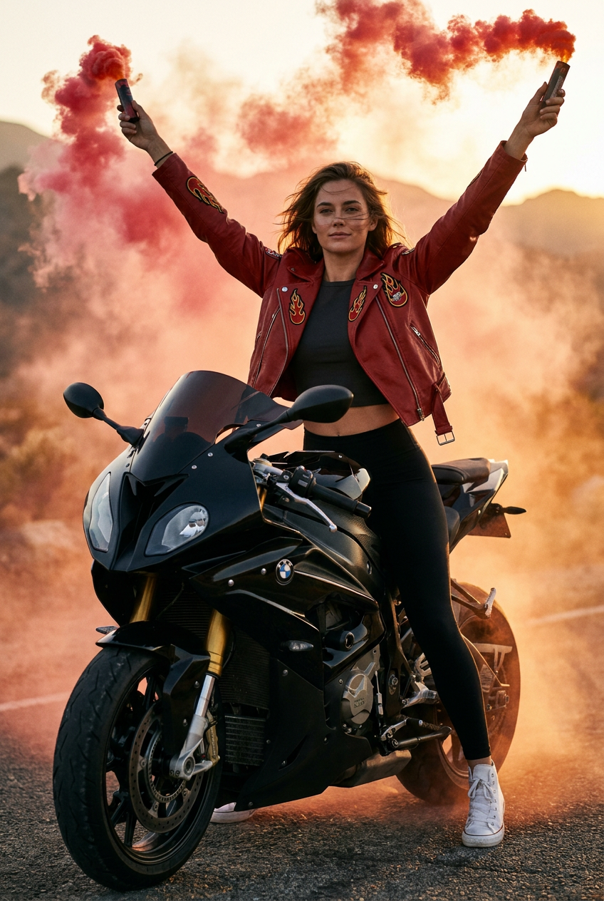
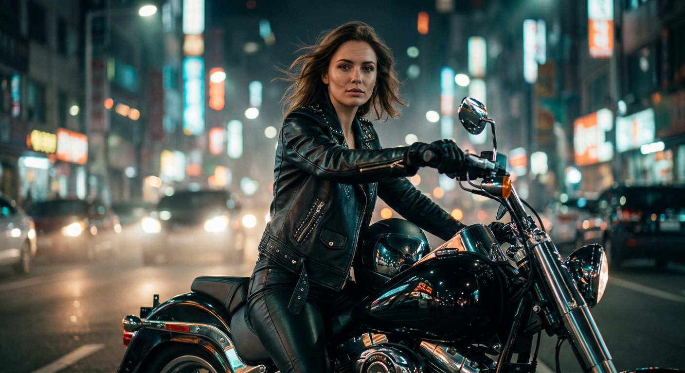
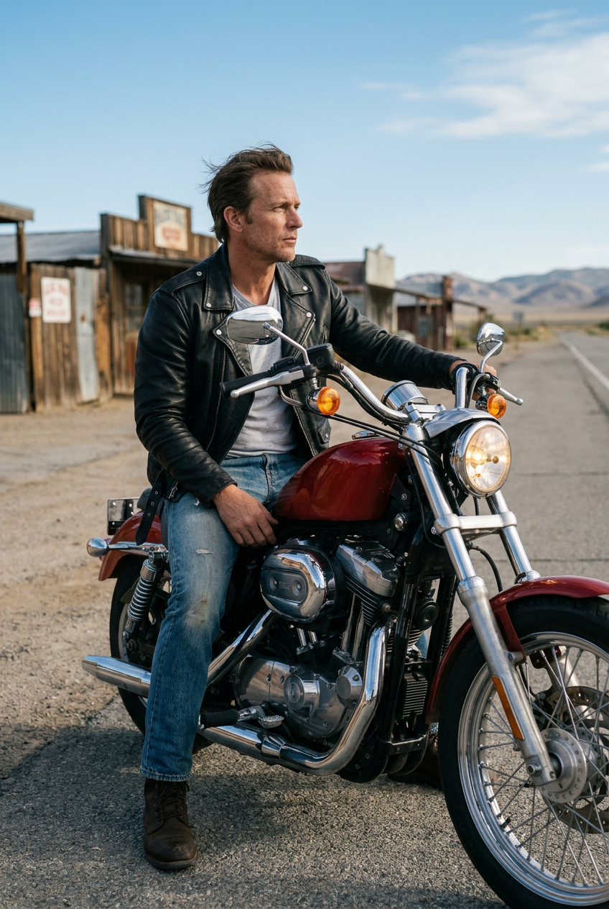
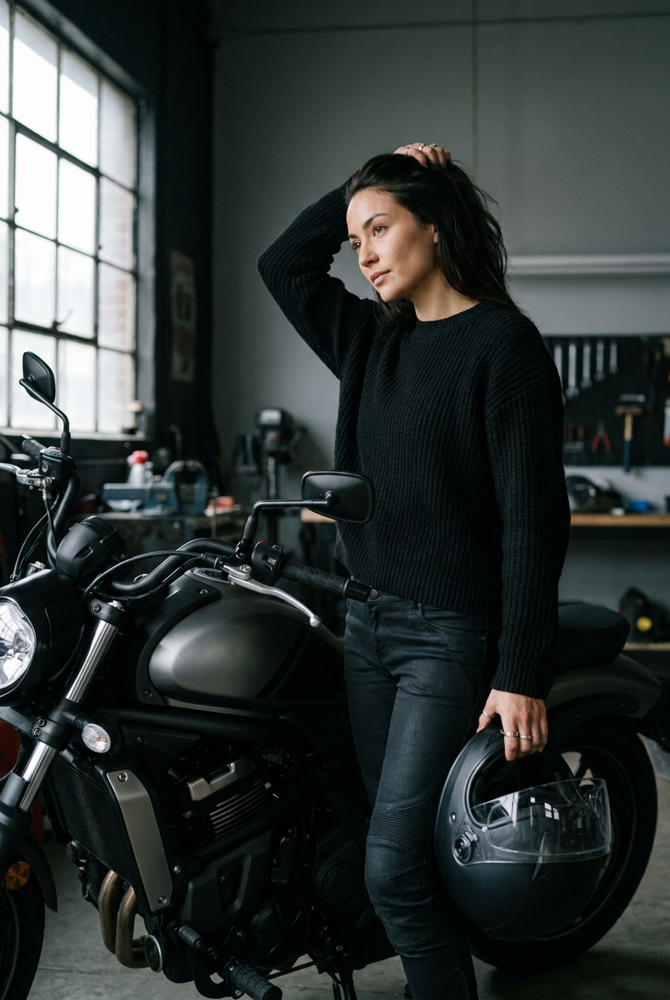
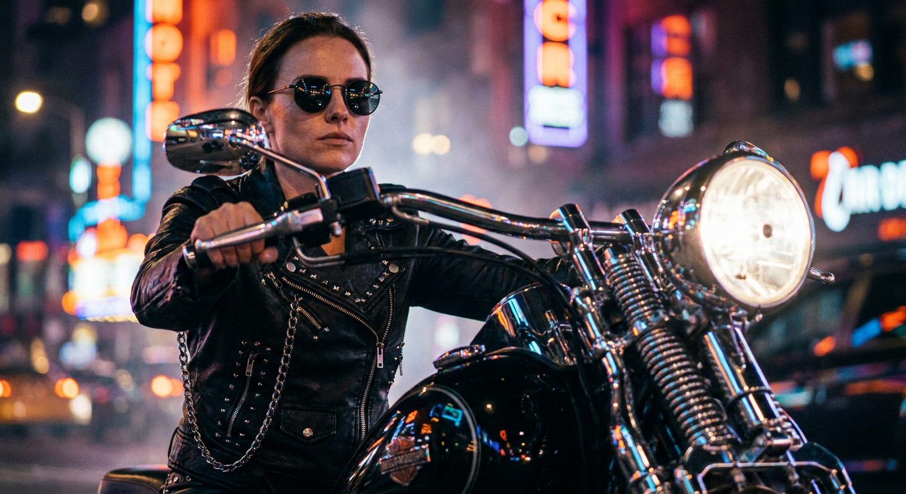
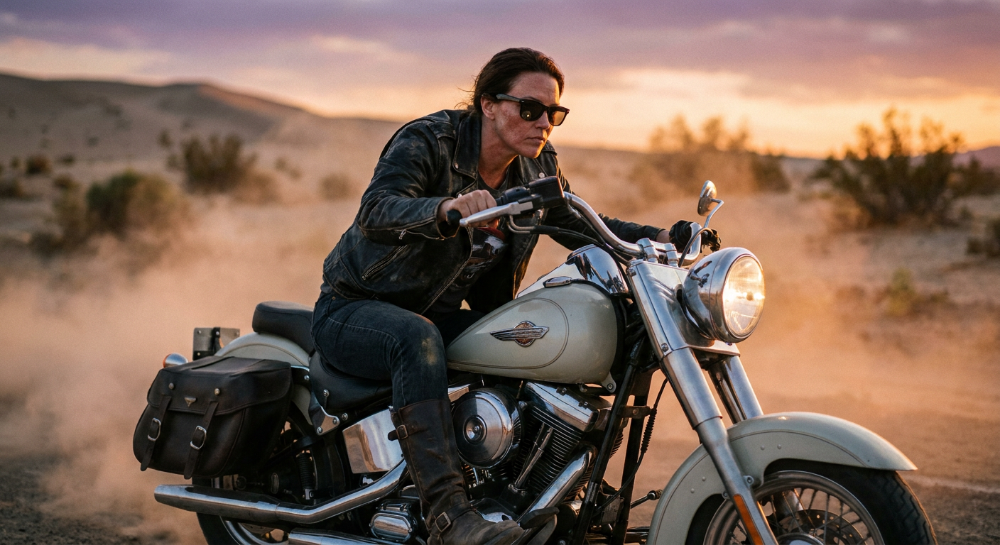
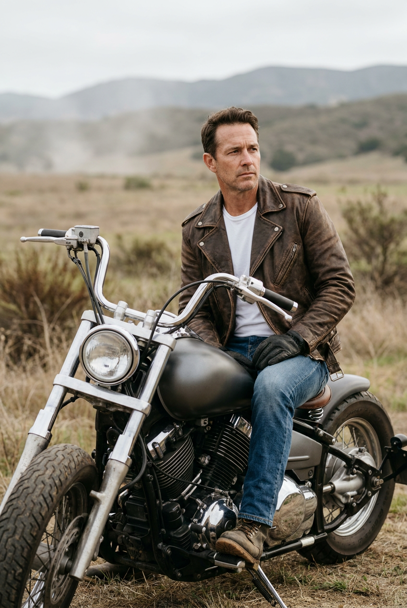
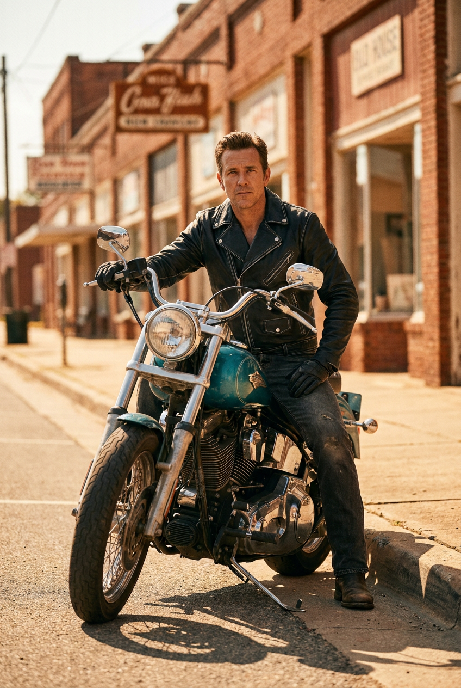

ИИ-фото в байкерском стиле: 10 промптов для нейросети

Обычная фотография не всегда передаёт нужный характер: мешают погода, локация, одежда и отсутствие подходящего мотоцикла. Генерация помогает собрать кинематографичный байкерский образ за несколько попыток — от неоновой улицы до пустынной дороги.
В подборке — 10 промптов для женских и мужских портретов: сцены на закате, в гараже, на ночном проспекте, среди дюн и в ретро-городке. В каждом описании уже заданы поза, экипировка, свет, детали мотоцикла и параметры съёмки.
Как сгенерировать такое фото: пошагово
Нужен снимок анфас при ровном свете, лицо в кадре целиком, без тёмных очков и головных уборов. Разрешение от 1000 пикселей по короткой стороне. Чем чётче исходник, тем точнее модель повторит черты.
Выберите сценарий ниже и нажмите «Копировать» — текст уйдёт в буфер целиком, вместе с командой сохранения внешности. Эта команда стоит первой строкой и отвечает за то, чтобы на выходе было ваше лицо, а не случайное.
Кнопка «Сгенерировать» рядом с каждым промптом открывает модель в новой вкладке. Nano Banana Pro работает с референсом лица — в отличие от моделей, которые генерируют портрет с нуля и узнаваемость теряют.
Промпт — в поле ввода, портрет — через загрузку референса. Порядок значения не имеет, но без референса команда сохранения внешности работать не будет: модели нечего сохранять.
Для сторис и ленты берите 9:16, для превью и обложек — 4:3. Первый результат редко идеален: если поза или свет ушли не туда, поправьте соответствующую часть промпта и запустите заново. Обычно хватает двух-трёх итераций.
10 промптов для генерации
1. Закатная горная дорога
Строго сохранить внешность по загруженному референсу: черты лица, пропорции, мимику и текстуру кожи без изменений. Фотореалистичный вертикальный cinematic-кадр, девушка с лицом по загруженному референсу стоит рядом с чёрным спортивным мотоциклом на горной дороге в час заката. Байк остановлен справа: массивное заднее колесо, металлические и хромированные детали, небольшой стоп-сигнал, открытые элементы двигателя и выхлопной системы. Девушка слева, в полуобороте со спины, слегка поворачивает корпус к камере и спокойно смотрит в объектив. В одной руке у неё шлем. На ней полностью чёрный кожаный или текстильный экип с защитными вставками, нашивками и графическими эмблемами без читаемых надписей, высокие чёрные байкерские ботинки и перчатки. Тёплый контровой свет, длинные тени, фактура асфальта, горный пейзаж, резкость на лице и мотоцикле, естественные пропорции, вертикальная композиция, cinematic color grading.
2. Городской круизер на закате

Строго сохранить внешность по загруженному референсу: черты лица, пропорции, мимику и текстуру кожи без изменений. Вертикальная фотореалистичная сцена в байкерской эстетике: девушка с лицом по загруженному референсу сидит или опирается на чёрный cruiser/roadster на городском проспекте в золотой час. Волосы развеваются, на лице круглые тёмные очки с мягкими отражениями огней города, в ушах серьги, на шее тонкая цепочка с кулоном. Чёрная кожаная куртка украшена заклёпками, металлическими пуговицами и молниями; под ней белый кроп-топ, на девушке рваные тёмные джинсы и высокие чёрные перчатки или нарукавники. Одна рука лежит на руле, поза уверенная, взгляд направлен к камере. У мотоцикла массивный бак, спицы или диски, хромированные элементы и круглая фара с тёплым светом. Контровое солнце, блики на лаке и металле, город на фоне, малая глубина резкости, вертикальный cinematic-кадр.
3. Красный дым на байке

Строго сохранить внешность по загруженному референсу: черты лица, пропорции, мимику и текстуру кожи без изменений. Рекламный фотореалистичный вертикальный кадр, камера расположена немного ниже уровня глаз. Девушка с лицом по загруженному референсу сидит на чёрном sport-touring мотоцикле, упираясь ногами в землю; байк с обтекателем и золотистой передней вилкой занимает большую часть нижнего плана, женщина находится по центру. Волосы растрёпаны ветром, выражение спокойное и уверенное. Обе руки подняты вверх, в каждой аккуратно зажата дымовая шашка, из них струится густой красный дым; пальцы анатомически правильные, без искажений. На девушке красная кожаная байкерская куртка с вышивками и нашивками, включая патч с пламенем, тёмный укороченный топ, чёрные леггинсы и белые высокие кроссовки или ботинки. Динамичный дымовой след, выразительный свет, чёткие детали мотоцикла, естественная анатомия, cinematic color grading.
4. Ночной байкерский портрет

Строго сохранить внешность по загруженному референсу: черты лица, пропорции, мимику и текстуру кожи без изменений. Фотореалистичная вертикальная сцена на ночной городской улице, фон растворяется в размытых огнях и крупном боке. В центре девушка с лицом по загруженному референсу сидит на тёмном современном cruiser или naked-байке, слегка разворачивая корпус к камере. Выражение спокойное и уверенное, взгляд выразительный, макияж лёгкий, волосы немного взъерошены ветром. На ней чёрная кожаная куртка с косой молнией, заклёпками, погонами и металлической фурнитурой, чёрные кожаные брюки и байкерские перчатки. Одна рука опирается на руль или кожух, вторая лежит у панели либо на корпусе мотоцикла. У байка глянцевый чёрный металл, хромированные детали, видимый двигатель, круглая фара, крепления, тормозные диски и руль. Холодный городской свет смешивается с тёплыми бликами, резкость на лице, малая глубина резкости, cinematic night photography.
5. Классик на пустынной дороге

Строго сохранить внешность по загруженному референсу: черты лица, пропорции, мимику и текстуру кожи без изменений. Вертикальный фотореалистичный cinematic-кадр: мужчина с лицом по загруженному референсу сидит на классическом американском cruiser/roadster в профиль, едет или остановился у обочины пустынной дороги. Он смотрит вдаль, держится спокойно и уверенно: одна рука находится на руле, вторая расслаблена на баке или возле бедра. Ветер слегка поднимает волосы. На мужчине чёрная кожаная куртка с молнией, заклёпками и пуговицами, светло-серая футболка, облегающие потёртые джинсы и коричневые или тёмные байкерские ботинки. У мотоцикла красный бак, хромированный двигатель, круглая фара с тёплым светом, передняя вилка, открытые рёбра цилиндров и массивные шины. Покажи реалистичные отражения на металле и лаке, фактуру кожи, дорожную пыль, естественный профиль, мягкий свет пустынного пейзажа и вертикальную композицию.
6. Гаражный образ со шлемом

Строго сохранить внешность по загруженному референсу: черты лица, пропорции, мимику и текстуру кожи без изменений. Фотореалистичный вертикальный кадр в современном гараже или у большого панорамного окна с прохладным дневным светом. Девушка с лицом по загруженному референсу стоит или сидит рядом с мотоциклом, камера находится примерно на уровне пояса и смотрит сбоку. Женщина развёрнута в профиль или на три четверти к объективу: одной рукой поднимает волосы и удерживает прядь у затылка, в другой опускает у бедра чёрный интегральный или полуинтегральный мото-шлем с прозрачным визором. Взгляд направлен в сторону, выражение лица спокойное и уверенное, макияж естественный. На ней чёрный облегающий свитер или лонгслив крупной вязки с высоким воротом, тёмные байкерские брюки или джинсы в тон, слегка подчёркивающие силуэт. Мотоцикл заметен в кадре, но не перекрывает фигуру. Холодные отражения на металле, натуральные тени, детальная фактура ткани и шлема, cinematic realism.
7. Неоновый круизер в движении

Строго сохранить внешность по загруженному референсу: черты лица, пропорции, мимику и текстуру кожи без изменений. Ночной фотореалистичный cinematic-кадр на городской улице с неоновыми вывесками, цветными отражениями и сильным боке. Девушка с лицом по загруженному референсу едет на тяжёлом cruiser/chopper, держась за руль. На ней чёрная кожаная куртка с заметной фактурой, косой молнией, заклёпками, пуговицами, ремешками и металлической фурнитурой. Волосы слегка развеваются, на лице тёмные круглые очки с отражениями неона, макияж аккуратный, выражение холодное и уверенное. В правой части кадра ярко светит круглая фара, рядом видны толстые трубы вилки, хромированные детали двигателя и глушителя, геометрия мотоцикла и чёткие блики на металле. Передай ощущение движения лёгким смазом фона, но оставь лицо и ключевые детали байка резкими. Насыщенная ночная палитра, контрастный неоновый свет, вертикальная композиция.
8. Круизер среди песчаных дюн

Строго сохранить внешность по загруженному референсу: черты лица, пропорции, мимику и текстуру кожи без изменений. Фотореалистичная кинематографичная сцена: уверенная байкерша с лицом по загруженному референсу едет на светлом cruiser или naked-мотоцикле по пустынной дороге. Волосы развеваются на открытом ветру, поза динамичная, словно кадр пойман в момент движения. На ней чёрная кожаная куртка, тёмные очки и высокие байкерские ботинки. У мотоцикла мощная передняя фара, хромированные и металлические детали, заметные тормоза, амортизаторы, боковые кофры или крепления; свет мягко отражается на коже, стекле очков и лаке. Вокруг песчаные дюны и низкие кусты, в воздухе висит лёгкая пыль. Тёплые закатные оттенки, контровое солнце, лёгкий haze, резкость по лицу и мотоциклу, shallow depth of field, объектив 35 мм, ultra realistic, cinematic color grading, мягкая виньетка по краям кадра.
9. Коричневая куртка в поле

Строго сохранить внешность по загруженному референсу: черты лица, пропорции, мимику и текстуру кожи без изменений. Вертикальный фотореалистичный cinematic-кадр: мужчина с лицом по загруженному референсу расположен слева в полупрофиль и сидит либо приподнято удерживается на классическом cruiser/standard-мотоцикле. Одна рука лежит на баке или корпусе, взгляд направлен вдаль. На нём матовая коричневая кожаная куртка с молниями и карманами, белая футболка, голубые джинсы и коричневые кожаные ботинки; кожаная перчатка может частично попадать в кадр. У мотоцикла металлический серо-чёрный бак, хромированные элементы руля и вилки, открытые механические детали двигателя, реалистичные диски и фактура резины, мягкие блики на металле и стекле фары. Локация — сельская местность с травой, кустарниками и холмами вдали. Естественный дневной свет, лёгкий ветер, спокойная поза, натуральная кожа и ткань, кинематографичная глубина резкости.
10. Ретро-город и бирюзовый байк

Строго сохранить внешность по загруженному референсу: черты лица, пропорции, мимику и текстуру кожи без изменений. Фотореалистичная вертикальная cinematic-сцена в небольшом американском городе с ретро-атмосферой. Мужчина с лицом по загруженному референсу подъезжает на классическом мотоцикле к бордюру или тротуару. Камера установлена на уровне байка и смотрит на него в три четверти спереди; мужчина сидит прямо, обе руки на руле, взгляд направлен вперёд. На нём чёрная кожаная куртка с белой прострочкой или кантом, тёмными ремнями и молниями, потёртые тёмные или синие джинсы, кожаные ботинки и, при желании, чёрные перчатки. Мотоцикл выполнен в стиле ретро cruiser/roadster: голубовато-зелёный teal-бак и детали, чёрная рама и двигатель, круглая фара, хромированные элементы, передняя вилка и хорошо видимые рёбра цилиндров. Добавь мягкий дневной свет, старые фасады, дорожные знаки, реалистичные отражения и умеренное размытие фона.
Что важно учесть в этом стиле
Байкерский кадр держится на трёх опорах: характерная поза, узнаваемый мотоцикл и фактурная одежда. Если описать только куртку и байк, персонаж часто выглядит как случайный прохожий. Указывайте положение рук, направление взгляда, разворот корпуса и точку съёмки.
Свет задаёт настроение сильнее, чем набор эффектных слов. Закат просит контрового света и длинных теней, ночная сцена — цветных отражений и боке, гараж — прохладного рассеянного освещения. Для динамики добавляйте пыль или смазанный фон, но отдельно прописывайте резкость лица и важных деталей мотоцикла.
Идеи для вариаций
- Замените закат на пасмурное утро после дождя и добавьте мокрый асфальт.
- Перенесите сцену в заброшенную придорожную закусочную с ретро-вывеской.
- Попросите камеру снять образ через зеркало мотоцикла или отражение в визоре.
- Добавьте дождевик, светоотражающие вставки и холодный свет фар.
- Смените стиль байка на cafe racer, эндуро или футуристичный электрический roadster.
Как собрать свой промпт
Начните с формата и типа кадра: вертикальный портрет, рекламная сцена или динамичная съёмка в движении. Затем задайте персонажа, одежду, позу и действие. После этого опишите мотоцикл через конкретные элементы — бак, вилку, фару, двигатель, диски и выхлоп.
В финале добавьте локацию, время суток, свет и технику: объектив 35 мм, диафрагма f/2.8, малая глубина резкости, резкость на лице и байке, разрешение 2048×3072. Для точного сходства используйте референс лица, а результат проверяйте серией из 4–8 генераций, меняя по одному параметру за раз.
Ошибки, из-за которых кадр не получается
- Слишком общий мотоцикл. Без типа байка и его деталей модель может смешать cruiser со спортбайком.
- Перегруженная поза. Несколько сложных действий одновременно часто приводят к лишним пальцам и неестественным суставам.
- Не задана точка съёмки. Укажите ракурс, высоту камеры и положение персонажа относительно мотоцикла.
- Свет описан одним словом. Добавьте направление, цвет и характер освещения: контровой закат, тёплая фара, холодный дневной свет.
- Текст на нашивках. Просите графические эмблемы без читаемых надписей, иначе нейросеть создаст случайные символы.
Частые вопросы
Как сделать такое ИИ-фото бесплатно?
Для первых попыток подойдут Kandinsky и Шедеврум: они доступны бесплатно, но могут хуже сохранять лицо по референсу и сложную анатомию. В Krea AI и Arena.ai есть бесплатные режимы или ограниченное число генераций, однако условия меняются. Референс лица поддерживается не во всех моделях одинаково: иногда доступна только стилизация, а не точное сходство. Для сложных сцен закладывайте несколько попыток и проверяйте правила загрузки личных фотографий.
Как сохранить сходство с человеком на референсе?
Используйте чёткий портрет без сильных фильтров, где хорошо видны глаза, нос, губы и овал лица. В промпте не меняйте возраст, причёску и ключевые черты без необходимости. Если сервис предлагает силу референса, начните со среднего значения: слишком высокая может исказить сцену, слишком низкая — лицо.
Как сделать мотоцикл реалистичным?
Назовите конкретный класс байка и перечислите видимые узлы: бак, круглую фару, вилку, двигатель, тормозные диски, шины и хромированные элементы. Уточните, где мотоцикл находится в кадре, а также попросите реалистичные отражения и правильную перспективу. Чем меньше конфликтующих деталей, тем стабильнее результат.
Что делать, если появляются лишние пальцы или детали?
Упростите позу и оставьте в кадре одно понятное действие. Для рук используйте формулировки вроде «пять пальцев, естественный хват, анатомически правильные кисти». В отрицательном промпте можно добавить лишние пальцы, деформированные руки, двойные конечности, кривые колёса, лишние фары и нечитаемый текст.